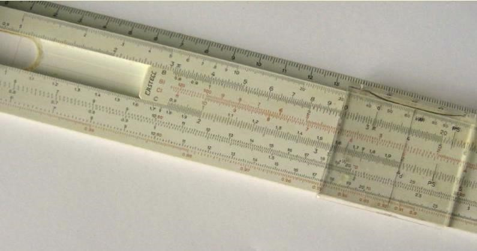

Začetki razvoja računalnikov
Abakus
Abakus je trenutno najstarejša digitalna računska naprava. Je preprost računski pripomoček. Na sebi ima nanizane kroglice katere se da premikati levo in desno in se z njimi na tak način d aseštevati in odštevati.

Logaritemsko računalo
Izhaja iz 2. polovice 17. stoletja in je preprosto analogno računalo podobno ravnilu, ki je po navadi sestavljeno iz treh vpetih umerjenih tračnih letev in drsečega okvirja. Deluje na osnovi logaritmov, ki jih je izumil Škot John Napier (1550-1617). Za razliko od drugih mehanskih računal, ki so digitalni, je logaritemsko računalo analogni računalnik.
Pascalov seštevalni stroj
Prvi stroj, ki ga je leta 1642 naredil veliki francoski filozof, matematik in fizik Blaise Pascal (1623-1662). Stroj je uporabljal osnovne aritmetične operacije. Za predstavitev desetiških števil je uporabljal zobata kolesa z desetimi zobmi in mehanizem za prenos enote na naslednje kolo po vsakem polnem obratu. Imel je dve skupini s šestimi zobatimi kolesi. Ena je služila kot akomulator (rezultati operacij se "akomulirajo" v njem), druga pa za vnašanje šestmestnega števila, ki ga je uporabnik želel prišteti ali odšteti od tistega v akomulatorju. Pogon stroja je bil seveda ročen s pomočjo posebne ročice. Lahko sešteva 5-mestna števila, kasneje tudi 8-mestna, vendar ne preveč zanesljivo. Izum je ekonomsko propadel, ker je bil drag in namenjen predvsem računovodstvu.

Leibnitzov stroj
Zasnoval ga je nemški filozof in matematik Gottfried Wilheim Leibnitz (1646-1716) leta 1674 in je prvi stroj, ki uporablja vse štiri osnovne računske operacije. Izdelan je bil šele leta 1694 in je podoben Pascalovemu. Imel je še dve dodatni skupini koles za predstavitev faktorjev oz. deljenca in delitelja. Za množenje in deljenje je izumil element, ki je danes znan kot Leibnizovo kolo. Stroj lahko sešteva in množi 5 do 12-mestna števila, produkt mora biti do 16 mest, potrebno pa ga je poganjati z ročico. Pri tem uporablja mehanizem za prenos pri seštevanju. V praksi je bilo delovanje Leibnitzovega stroja nezanesljivo. Resnično uporabni stroji so se pojavili šele v drugi polovici osemnajstega stoletja.